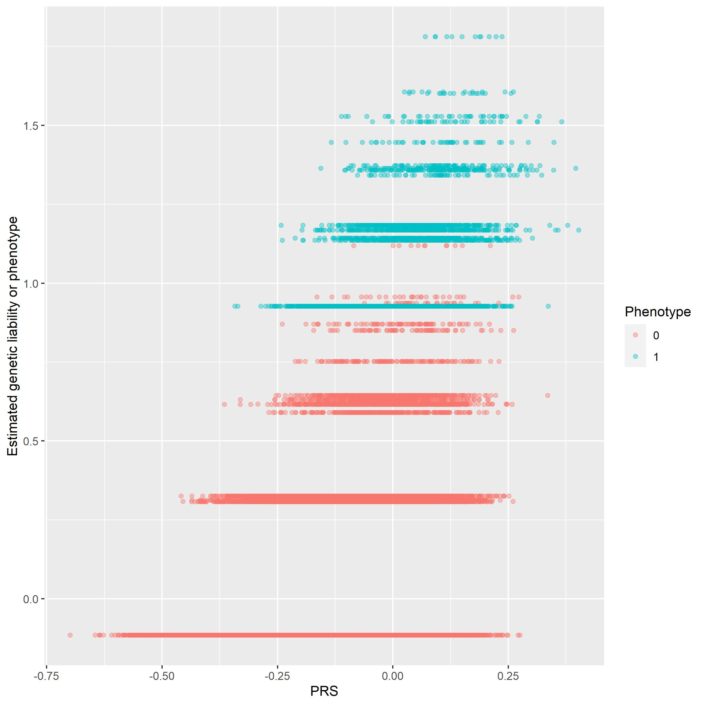
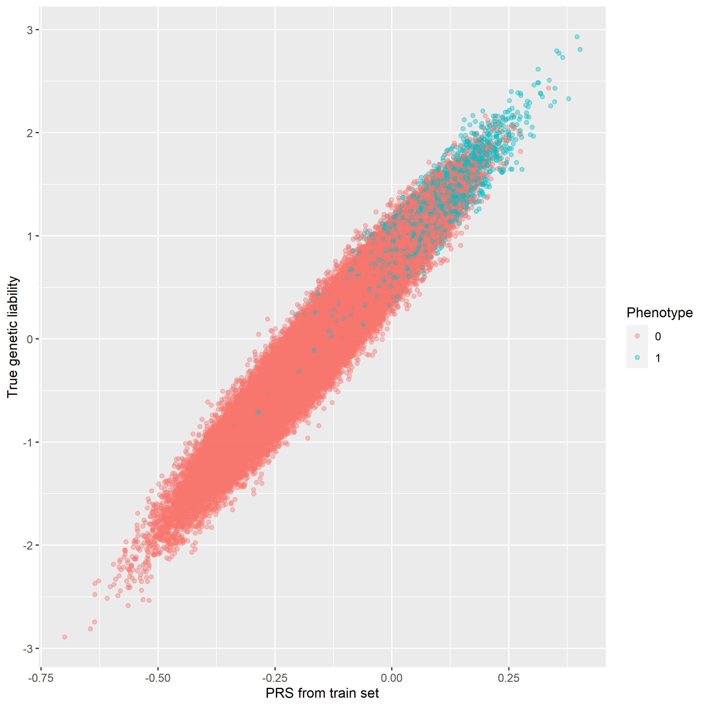

Prediction
Prediction.RmdWe are in this vignette showing the possibilities of using the result of association analysis in order to predict occurence of the trait by looking at genetic data. We are in this analysis only looking at genetic data, which normally would not be case. In predicting the prevelance of trait/sickness many other factors will have to be taken into account. This could be sex, age, BMI or other potential confounding variables. We are though going to show that it is possible to create a stronger model through the use of genetic data if there of course is a strong enough heritability. We are therefor going to use the method on \(1e^5\times1e^3\) data with 500 casual SNPs. This is not realistic data, but i will show the potential of the method.
We use the following packages in this vignette.
Introduction to PRS
In prediction we use a trainings set and a test set. We are in the following section going to show a method which uses LT-FH estimates as its target vectors.
# Loading our train and test set
train_set = snp_attach("genetic_data.rds")
test_set = snp_attach("genetic_data_test.rds")
# We save the genotypes and target vector
G = train_set$genotypes
est <- LTFH(data = train_set, n_sib = 2) %>% select(., contains("est"))
y_ltfh = est[[1]]Using PRS we want to find which threshold for the p-value describes the data best. We are therefore using cross validation. The following function outputs PRS estimates for the validation set for each fold in the training data.
prs = PRS_cross(train_data = train_set, y = y_ltfh, cross_folds = 4)We use these scores to evaluate the threshold.
The following plot has been evaluated on \(1e^5\times1e^3\) data.
prs_plot(PRS = prs, train_set, 'AUC')

prs_plot(PRS = prs, train_set, 'MSE')

prs_plot(PRS = prs, train_set, 'R2')

Looking at the above plot we find that the optimal threshold for the p-value is around 3. Next we would like to know for which value of PRS as a desicion boundary we could expect the best result. We not considering how may false negatives we experience. It is much more important that the amount of false positives is very low. Like GWAS or LT-FH would we prefer a much more conservative prediction. We are using cross validation again with the following output for the \(^5\times1e^3\) matrix.
decision_cross(train_data = train_set, y = y_ltfh, cross_folds = 4, bounds=seq(0.2, 0.3, 0.01), thr = 3)
We will choose a boundary around 0.25. We are now ready to create a prediction.
Prediction using PRS
Using this we can create our model. We are only using a linear regression, since we are using LT-FH estimates as our target vector.
ltfh_model = pred_model(train_data = train_set, y = y_ltfh, thr = 3, LogReg = FALSE)
And creating our predictions
pred = prediction(test_data = test_set, gwas = ltfh_model, thr = 3)We know use the value we found for the decision boundery and we have the following result.
preds = (pred > 0.25)-0
confusion_matrix = as_tibble(table('Predicted' = preds[,1], 'Actual'= test_set$fam$pheno_0))
confusion_matrix %>%
ggplot(aes(x = Predicted, y = Actual)) +
geom_tile(aes(fill = n), show.legend = FALSE) +
geom_text(aes(label = sprintf("%1.0f", n)), vjust = 1) +
scale_fill_gradient(high = "firebrick", low = 'dodgerblue3', trans='pseudo_log')
Documentation
We will in this section explain the process behind the above result. We can only expect to be able to predict the genetic liability. If a subject has a very low genetic liability, but high envirromental liability we can of course not catch this with PRS. We are therefore going to plot the PRS agianst the genetic liablity.

We can see from the above plot that these two values are very correlated. It is therefore reasonable to add PRS as a controlling variable when prediction studies is performed. We can also plot the PRS of the test set.

As excpected boundary between cases and non cases is a bit less clear, but we still se a very high correlation.
USing phenotypes instead of LT-FH estimates
We have in the above used LT-FH estimaes in our prediction. We have done this as we believe this is a superior method with higher power and more accuracy. One argument for this is that we trough PRS cant expect to predict the cases, but we can predict who has a high genetic liability.
Using the same method as above we can see that the correlation between the genetic liability and PRS found with linear regression or logistic regression using phenotypes is much lower.